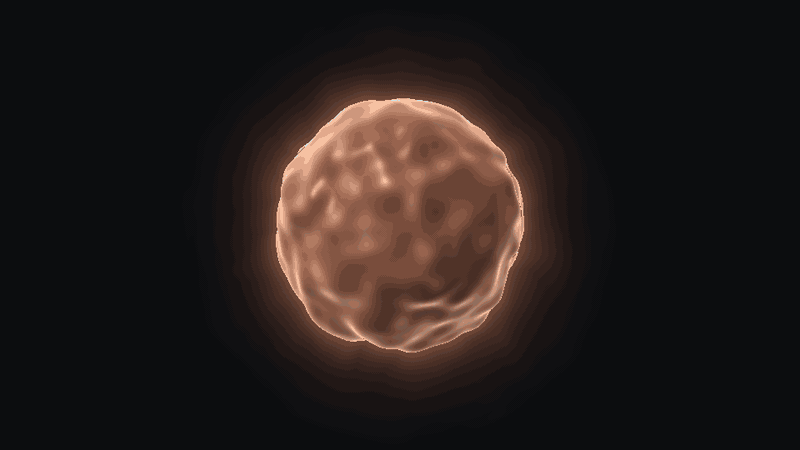
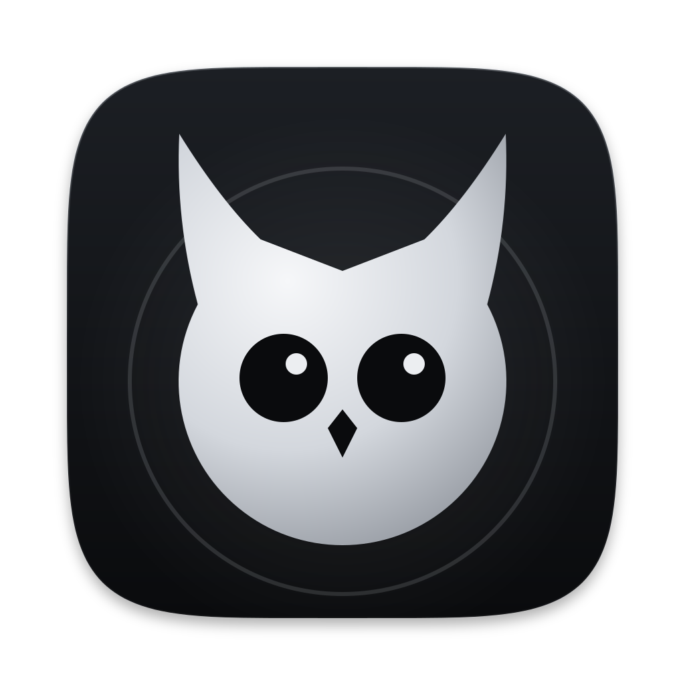

Logotipo
Newsreader Medium in tracciati, minuscolo. Il gufo viene dall'Orb a riposo ed è alto quanto la x.
Costruzione
Disco, due ciuffi, la V del disco facciale. Occhi e becco forati: regge a 18 pt nella barra dei menu.
L'unico colore

Promessa
Ascolta, ricorda,
poi lavora.
Notte
Luminosità, peso e bordo dicono «selezionato». Lume solo per «Attende te».
ink#0A0B0D
testo#ECEEF1
secondario#8E939B
Lume#D6F26B
Tipografia
Aa
Display Newsreader34
Titolo SF Pro22
Corpo SF Pro15
Dati SF Mono 0,42 €12
Riunione con Ilaria
Cosa abbiamo deciso sul lancio?
Tre cose: beta chiusa a novembre, prezzo deciso dopo le prime 50 iscrizioni, demo registrata da te. Le ho prese da Riunione 3 ottobre e da Lancio.
Avvio una Sessione su bubo per la pagina della beta?
Spaziatura
Ho salvato «beta a novembre» in Lancio.
Ottimo! Ho elaborato le tue preziose informazioni.
Icona e barra dei menu
